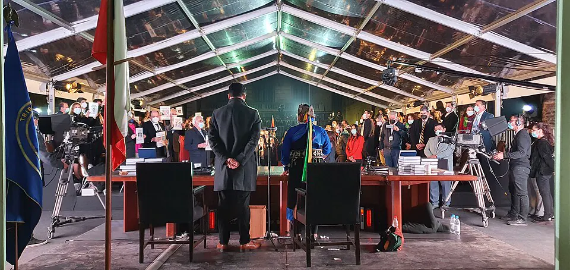

Procesos constitucionales

Tras el Estallido social, el Acuerdo por la Paz Social y la Nueva Constitución abrió un proceso inédito. La pandemia de COVID-19, que llegó a Chile en marzo de 2020, obligó a postergar el plebiscito de entrada e impuso cuarentenas y una fuerte crisis sanitaria y económica; luego el país desarrolló una de las campañas de vacunación más rápidas del mundo. El 25 de octubre de 2020, el Apruebo obtuvo un 78% y se optó por una Convención Constitucional íntegramente electa. Sus 155 integrantes, elegidos en mayo de 2021 con paridad de género y escaños reservados para pueblos originarios, se instalaron en julio de ese año; su primera presidenta fue la académica mapuche Elisa Loncon. La propuesta, que definía a Chile como un Estado social, plurinacional y ecológico, fue rechazada el 4 de septiembre de 2022 por un 62%, en un plebiscito con voto obligatorio. Un nuevo acuerdo político dio origen a una Comisión Experta y a un Consejo Constitucional electo en 2023, de mayoría de derecha. Esa segunda propuesta fue rechazada el 17 de diciembre de 2023, con un 55,8% para la opción En contra. Así, sigue vigente la Constitución de 1980 con sus reformas. Los análisis sobre las causas de ambos rechazos son diversos.
Versión para niños
Después del Estallido social, Chile decidió preguntarle a la gente si quería una nueva Constitución. En 2020, mientras el mundo enfrentaba la pandemia de COVID-19, se votó en un plebiscito y ganó la opción Apruebo. Luego, un grupo de personas elegidas escribió una propuesta, pero en 2022 la mayoría votó en contra. En 2023 se hizo un segundo intento y también fue rechazado. Por eso sigue vigente la Constitución anterior, con sus reformas.
Para maestros
Nivel sugerido: 2° medio
Objetivo: Comprender las etapas de los procesos constitucionales de 2020 a 2023 y valorar los mecanismos democráticos de participación.
Preguntas para la clase:
- ¿Qué es un plebiscito y qué diferencia hay entre un plebiscito de entrada y uno de salida?
- ¿Por qué crees que una gran mayoría votó Apruebo en 2020 y luego se rechazaron dos propuestas?
- ¿Cómo afectó la pandemia de COVID-19 a la vida cotidiana y a la política?
Actividad (20–30 min): Los estudiantes elaboran una línea de tiempo con los hitos del proceso (acuerdo de 2019, plebiscito de 2020, Convención, plebiscito de 2022, Consejo Constitucional, plebiscito de 2023) y sus resultados oficiales. Luego, en grupos, discuten con respeto distintas explicaciones de los resultados, sin pedir a nadie revelar cómo votó su familia.
Fuentes sugeridas: Servicio Electoral de Chile (Servel); Biblioteca del Congreso Nacional (BCN); Biblioteca Nacional Digital.
Objetivos de Aprendizaje (Currículum Nacional)
- 6° básico · HI06 OA 16 Reconocer que la Constitución Política de Chile establece la organización política del país y garantiza los derechos y las libertades de las personas
- 2° medio · HI2M OA 18 Analizar la nueva institucionalidad política creada por la Constitución de 1980 … y evaluar cambios y continuidades con el presente
- 2° medio · HI2M OA 23 Explicar los elementos que constituyen un Estado de derecho, como la Constitución … y debatir sobre su perfeccionamiento, defensa y riesgos a los que está expuesto
- 4° medio (Educación Ciudadana) · FG-ECIU-4M-OAC-01 Evaluar las características y el funcionamiento de la institucionalidad democrática, las formas de representación y su impacto en la distribución del poder en la sociedad
Revisión humana pendiente. Cómo se revisa · Reportar un error
Cómo citar: Historia de Chile. (2026). Procesos constitucionales. En Historia de Chile: atlas y línea de tiempo. https://moises-salgado.github.io/historia-de-chile/momento/procesos-constitucionales.html